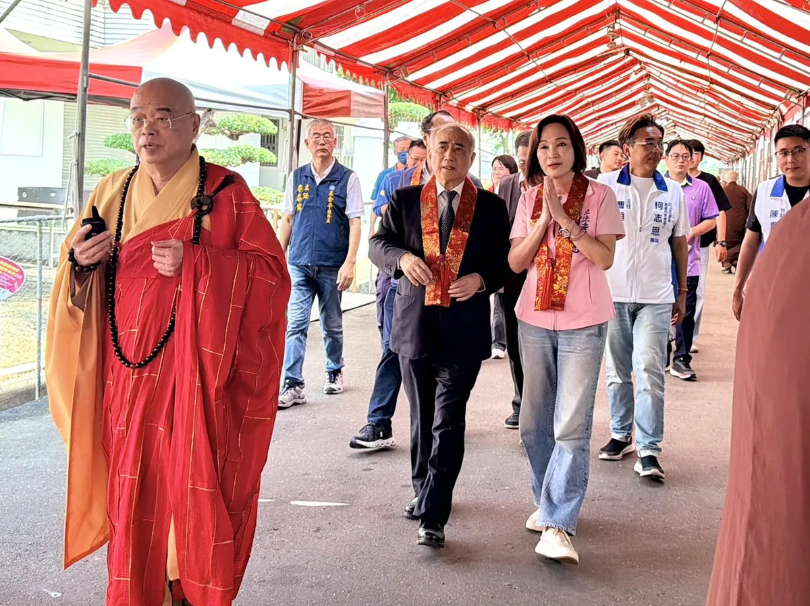
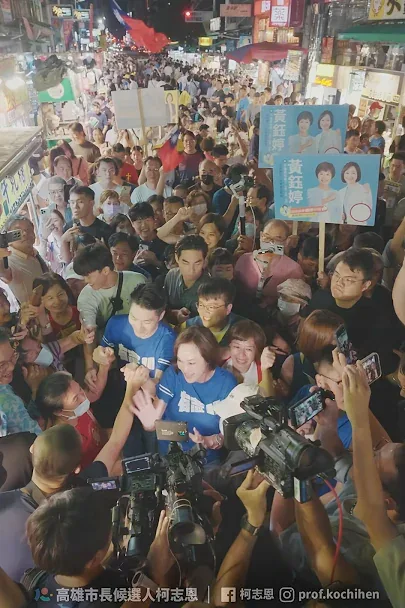
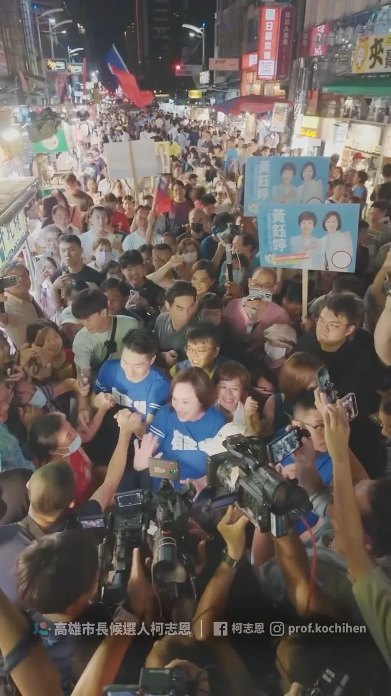

柯志恩kochihen
【9/19 Fengshan Mega Rally | Highlights of Chiang Wan-an's Speech】
Accounts
| 平台 | 帳號 | 已收錄貼文 | 最後更新 |
|---|---|---|---|
| https://www.facebook.com/KoChihEn/ | 132 | 2026-09-20 10:24 | |
| https://www.instagram.com/prof.kochihen/ | 172 | 2026-09-21 21:24 | |
| Threads | https://www.threads.com/@prof.kochihen | 109 | 2026-09-21 13:59 |
| YouTube | https://www.youtube.com/channel/UCmDcMkSjhyj2R91z0FlGjAA | 78 | 2026-09-21 21:30 |
| TikTok | https://www.tiktok.com/@kochihen | 0 | — |
| LINE 官方帳號 | https://reurl.cc/MNQXRL | 0 | — |
| LINE 社群 | https://reurl.cc/lep726 | 0 | — |
Timeline
顯示 491 / 491 則
【9/19 Fengshan Mega Rally | Highlights of Chiang Wan-an's Speech】

很高興再次來到阿蓮光德寺，參加南部供佛齋僧、育僧誦戒、護國祈福大法會，這已經是我連續第三年來到 #光德寺 。 每次到來，都能感受到大家對 #佛法 的虔誠，也能感受到佛法所帶來的「法喜」與「喜樂」；這場法會不只有「供佛齋僧」，還有「育僧」與「誦戒」，其背後承載的，是讓佛法有人傳，讓善念有人接，讓慈悲一代一代延續下去。 在這個快速變動的社會，每個人都有自己的壓力與不容易，更需要多一點理解、多一點包容，也多一點為別人著想的心；所以對於政治人物來說，不只是參加一場法會，更是一段讓自己放慢腳步、沉澱心情、重新反省的時間，當每天面對不同的聲音與選擇時，更需要時時提醒自己，保持初心，也保有一份自省的心。 必須向所有長年護持法會的法師、護法與志工朋友致上敬意，也希望每次來到這裡，不只是接受大家的祝福，也把這份慈悲、智慧與善念帶回生活，帶到更多地方。 祈願佛法長存、正法久住，祈願社會祥和、國家安定，也祈願 #高雄 每一個家庭都平安健康。

@prof.kochihen:高雄就像一台跑車，唯有「換檔」衝刺，才能駛出全世界。 柯志恩提出「四個優先」： 「薪水漲起來」「讓人留下來」「環境好起來」「高雄拚世界」 讓高雄再創奇蹟，實現夢想海港，世界雄心！
[9/19 Fengshan Grand Rally | Highlights of Ko Chih-en's Speech]
川流不息，有志一同！ 謝謝港都的熱情，謝謝高雄的鄉親，我們繼續向前！

After the 9/19 Fengshan rally, I brought Mayor #ChiangWanAn to #LiuheNightMarket and felt the ove...

大風起，鳳山集結！ 回顧919大造勢的熱血與感動。 #柯志恩 #王金平 #蔣萬安 #李四川
六合夜市，今晚被塞爆了！ 結束鳳山「大風起」造勢，和蔣萬安市長一起走進六合夜市，沒想到一路人潮幾乎水洩不通！短短一條路，我們竟然走了將近一個小時。 鄉親一看到我們，紛紛上前打招呼、拍照、邀請合影，手機一支接一支拿起來，攤商也熱情招呼。走到哪裡，就被人群圍到哪裡！ 這些年來，我沒有離開高雄，一步一腳印走進市場、廟口、街頭，今天看到這麼多鄉親站出來給我加油，我知道，這股力量正在越來越大！ 北高連線，人氣爆棚！ 高雄這一戰，正式起風！ 謝謝每一位今晚為我們加油的高雄鄉親。 倒數七十天，最後的關鍵時刻，我們一起拚到底！ #高雄 #六合夜市
六合夜市，今晚被塞爆了！ 結束鳳山「#大風起」造勢，和 蔣萬安 市長一起走進六合夜市，沒想到一路人潮幾乎水洩不通！短短一條路，我們竟然走了將近一個小時。 鄉親一看到我們，紛紛上前打招呼、拍照、邀請合影，手機一支接一支拿起來，攤商也熱情招呼。走到哪裡，就被人群圍到哪裡！ 這些年來，我沒有離開高雄，一步一腳印走進市場、廟口、街頭，今天看到這麼多鄉親站出來給我加油，我知道，這股力量正在越來越大！ #北高連線 ，人氣爆棚！ 高雄這一戰，正式起風！ 謝謝每一位今晚為我們加油的高雄鄉親。 倒數七十天，最後的關鍵時刻，我們一起拚到底！ #高雄 #六合夜市
@prof.kochihen:我的對手說，他現在是龍捲風，我不知道他的本事在哪，但龍捲風來的猛去得快，留下都是破壞！ 我的對手是新潮流，絕對不能讓一個高雄領導者被派系綁架，派系要拚他們的口袋、錢袋，我們要拚的是下一代
【919鳳山大造勢｜蔣萬安演講精華】 #蔣萬安 @wanan.chiang 市長：「柯志恩持續深耕高雄，兌現承諾、說到做到。」 「她能讓高雄的進步走出舞台、走入巷弄；走出市區、走入38個行政區，讓高雄更加耀眼！」 #柯志恩 #蔣萬安 #李四川 #王金平 #大風起 #夢想海港 #世界雄心
[Gushan Temple Square Speech Highlights] Ke Chih-en: This Is My Home! #KeChihEn #TempleSquare #Ka...

@prof.kochihen:客庄有青年，客家就有未來 四年前，我曾在美濃天后宮辦過廟口開講。那晚廟埕來了好多鄉親，給予我滿滿的熱情與支持，我一直都感恩在心。 說到美濃，大家熟悉粄條、紙傘、藍染和田園風光。對生活在這裡的鄉親來說，客庄更是每天的生活：年輕人回鄉找得到機會，農產和工藝賣得出去，旅客願意留下來，孩子在家裡、學校和街坊都能自然說客語。這些事，我會放進市政裡，認真來做。

【919鳳山大造勢｜柯志恩演講精華】 高雄就像一台跑車，唯有「換檔」衝刺，才能駛出全世界。 柯志恩提出「四個優先」： #薪水漲起來 #讓人留下來 #環境好起來 #高雄拚世界 讓高雄再創奇蹟，有志一同，翻轉高雄！ #柯志恩 #蔣萬安 #李四川 #王金平 #大風起 #夢想海港 #世界雄心

讓禱告成為希望，用行動改變高雄！ 參加第五屆 #高雄城市祈禱午餐會 ，心裡有很深的感動，來自不同教會、不同領域、不同背景的朋友齊聚一堂，為同一座城市獻上祝福與禱告。 感謝高雄市基督教福音聯盟協會，以及楊錫儒牧師和所有牧長、弟兄姊妹多年來深耕社區；在大家需要協助的時候，都能看見教會付出的身影。 大家站在一起為 #高雄 禱告，談的不只是城市建設，更關心人口發展、青年未來、居住正義、就業創業、世代共融，以及每一個家庭的幸福。 聖經中說：「你們要為那城求平安。」我特別喜歡！因為我們所追求的平安，不只是沒有風雨，而是長輩有人照顧、孩子能安心成長、家庭能看見希望、年輕人願意把夢想留在高雄。 #禱告 不是把責任交出去，而是在禱告之後，更要走出去，看見需要，就伸出援手；看見問題，就一起尋找答案；看見城市的未來，就共同承擔責任。 願我們繼續攜手同行，讓更多善意在高雄匯聚，讓更多希望在高雄扎根；願上帝祝福高雄，祝福每一個家庭，也祝福所有願意為這座城市付出的人。

919鳳山大造勢之後，我帶著蔣萬安 市長到 #六合夜市，感受到高雄鄉親滿滿的熱情。
The Winds of Change Rise, Gathering in Fengshan! Looking Back at the Passion and Inspiration of t...

今天的鳳山，讓我再次看見高雄改變的力量！ 八年前，我和蔣萬安一起站在鳳山，見證高雄的改變；八年後，我們再次站在這裡，看見的依然是人民期待更好未來的眼神。 謝謝王金平院長、蔣萬安市長、李四川市長候選人，以及所有議員、里長和鄉親朋友到場相挺。 王院長說，八十多歲了，為什麼還願意再度「撩落去」？因為他掛念高雄的未來，掛念年輕人的機會，也掛念下一代要生活在什麼樣的城市。 李四川、川伯說，市政沒有小事，路平、燈亮、水溝通，看起來平凡，卻是人民每天最真實的感受。下雨能不能安心睡覺、長輩出門方不方便、孩子回家路安不安全，都是市長該放在心上的事。 蔣萬安市長則提到，時間最能驗證政治人物的承諾，四年前我答應大家留在高雄，這些年我沒有離開。我走遍38個行政區，從山區到海邊，從農村到市區，一步一步認識這座城市，也更了解高雄人的期待。 高雄這些年有進步，我們願意肯定；但高雄的下一步，不能只滿足於現在。 孩子為什麼還是北漂？ 薪資為什麼追不上房價？ 科技產業來了，傳統產業怎麼升級？空氣、水質、工安、職安，以及城鄉資源分配，還有多少問題等待解決？ 高雄是一輛性能優異的跑車，但如果永遠停留在同一個檔位，就無法跑向更遠的未來。 所以我提出13579政見，高雄未來最優先的方向：薪水漲上去，把人留下來；環境更美好，高雄拚世界。 讓產業升級，讓青年看見機會；讓經濟發展，也讓空氣更好、水質更好；讓高雄不只是被世界看見，更能走向世界。 今天站在台上的，一位是工程師、一位是律師，而我是老師。我們來自不同領域，但有共同信念，讓專業回歸市政，把人民放在第一位。 高雄不屬於任何政黨，高雄屬於所有高雄人。這場選舉，不只是選一位市長，更是在決定高雄下一個階段要往哪裡走。 我們一起站在這裡祈求一個可以服務鄉里的機會，不要製造世代對立，也懇請大家支持我們所有議員和里長，我們絕對全心以高雄為榮，讓全台灣、全世界看到高雄。 鳳山吹起的風，我相信會吹向整個高雄，讓我們的勝選 政黨輪替、 再創奇蹟。 #高雄 #翻轉高雄 #再創奇蹟 #更好的未來
@prof.kochihen:今晚的六合，太熱情了！ 謝謝每一位為我們加油的鄉親！

今天的 #鳳山 ，讓我再次看見高雄改變的力量！ 八年前，我和 #蔣萬安 一起站在鳳山，見證高雄的改變；八年後，我們再次站在這裡，看見的依然是人民期待更好未來的眼神。 謝謝 台灣公道伯 王金平 院長、蔣萬安 市長、李四川Hammer Lee 市長候選人，以及所有議員、里長和鄉親朋友到場相挺。 王院長說，八十多歲了，為什麼還願意再度「撩落去」？因為他掛念高雄的未來，掛念年輕人的機會，也掛念下一代要生活在什麼樣的城市。 李四川、川伯說，市政沒有小事，路平、燈亮、水溝通，看起來平凡，卻是人民每天最真實的感受。下雨能不能安心睡覺、長輩出門方不方便、孩子回家路安不安全，都是市長該放在心上的事。 蔣萬安市長則提到，時間最能驗證政治人物的承諾，四年前我答應大家留在高雄，這些年我沒有離開。我走遍38個行政區，從山區到海邊，從農村到市區，一步一步認識這座城市，也更了解高雄人的期待。 高雄這些年有進步，我們願意肯定；但高雄的下一步，不能只滿足於現在。 孩子為什麼還是北漂？ 薪資為什麼追不上房價？ 科技產業來了，傳統產業怎麼升級？空氣、水質、工安、職安，以及城鄉資源分配，還有多少問題等待解決？ 高雄是一輛性能優異的跑車，但如果永遠停留在同一個檔位，就無法跑向更遠的未來。 所以我提出13579政見，高雄未來最優先的方向：薪水漲上去，把人留下來；環境更美好，高雄拚世界。 讓產業升級，讓青年看見機會；讓經濟發展，也讓空氣更好、水質更好；讓高雄不只是被世界看見，更能走向世界。 今天站在台上的，一位是工程師、一位是律師，而我是老師。我們來自不同領域，但有共同信念，讓專業回歸市政，把人民放在第一位。 高雄不屬於任何政黨，高雄屬於所有高雄人。這場選舉，不只是選一位市長，更是在決定高雄下一個階段要往哪裡走。 我們一起站在這裡祈求一個可以服務鄉里的機會，不要製造世代對立，也懇請大家支持我們所有議員和里長，我們絕對全心以高雄為榮，讓全台灣、全世界看到高雄。 鳳山吹起的風，我相信會吹向整個高雄，讓我們的勝選政黨輪替、再創奇蹟。 #高雄 #翻轉高雄 #再創奇蹟 #更好的未來
Sanmin District Sanfong Temple Speech: Ke Chih-en returns to the "original starting point" of the...

[Highlights from the Xinxing District Temple Square Speech] Let Kaohsiung's next generation thriv...

客庄有青年，客家就有未來 四年前，我曾在美濃天后宮辦過廟口開講。那晚廟埕來了好多鄉親，給予我滿滿的熱情與支持，我一直都感恩在心。 說到美濃，大家熟悉粄條、紙傘、藍染和田園風光。對生活在這裡的鄉親來說，客庄更是每天的生活：年輕人回鄉找得到機會，農產和工藝賣得出去，旅客願意留下來，孩子在家裡、學校和街坊都能自然說客語。這些事，我會放進市政裡，認真來做。 1️⃣ 高雄接棒，讓世界看見客家 我會向中央爭取續辦「世界客家博覽會」，並由高雄承辦。以美濃、杉林、六龜等客庄為舞台，串聯海外客家社群，定期舉辦國際論壇、青年交流與藝文合作，把高雄客庄介紹給世界，也一步步把高雄打造成南方客家文化首都。 2️⃣ 客青返鄉，資金、品牌、通路一起到位 推動「高雄客庄復興計畫」，18至40歲青年投入文化、農業、工藝、觀光或地方創生，符合資格並通過審查者，市府每年最高補助50萬元，也協助申請中央資源，兩年合計最高可達200萬元。 市府也會建置客家文化新創集資平台，推動「高雄客庄品牌」與「客家之光」評選，把農產、美食、工藝和文創商品送上共同電商平台。鄉親專心把產品做好，品牌、行銷和通路，市府一起來幫忙。 3️⃣ 從旗美出發，把人潮帶進東九區 以美濃、旗山為旅遊雙核心，改善公共運輸和轉乘，串起內門、杉林、六龜、甲仙等山城景點。旅客從旗美出發，沿著山城慢慢走，半日遊也能變成兩天一夜。 再推出「高雄好客券」：入住客庄地區的合法旅宿或露營場，消費滿1,500元，就能領取500元好客券，到在地特約店家使用。人留下來，住宿、餐飲、農產和商店就有更多生意。 4️⃣ 客家活動我來挺，客庄故事留得住 為鼓勵舉辦客家活動，市府對區公所、各級學校與客家團體文化活動補助，也要實在加碼。同一申請單位每年補助上限由10萬元提高到20萬元；政策性計畫或具文化傳承意義的大型活動，由30萬元提高到60萬元，讓長年在地方保存文化的人得到更多支持。同時，也支持以高雄客庄為主題的音樂、影視及文化創作，讓客庄的美、文化及歷史記憶被世界看見，也希望藉此吸引更多旅客到訪，帶動地方觀光與經濟發展。 現有「高雄客家月」將擴大整合，升級為「高雄客家季」。客家流行音樂祭、市集、工藝展、影像展演與歲時祭典接力登場，客庄與都會區一起熱鬧，做成市民會期待、外地旅客也願意專程參加的高雄盛典。 同時建立「高雄客庄數位典藏」，逐步收錄庄頭歷史、耆老口述、老照片、工藝技法與文化故事，提供學校教學、館舍展示和旅遊導覽使用，把珍貴的地方記憶好好保存下來。 5️⃣ 客家語言不流失，傳統工藝有傳承 2030年前，生活客語和沉浸式教學的參與學校數要倍增，並以三民、鳳山等都會區為目標持續擴大辦理。客語認證獎勵也提高為初級1,000元、中級1,500元、中高級3,000元、高級5,000元、專業級6,000元，鼓勵更多孩子和年輕人開口說客語。 伙房、老街、伯公、敬字亭和歷史聚落，要好好保存；油紙傘、藍染、竹編等工藝，也要建立傳承和培育機制。家裡有人說、學校有人教、手藝有人接，客家文化才會一代一代留在生活裡。 我期待四年後再走進美濃，看到返鄉青年開了店、庄頭產品接到更多訂單，孩子用客語和長輩聊天，外地旅客住了一晚還捨不得走。 上週，再度前往美濃天后宮廟口開講，看到鄉親對美濃的期待、對客庄的建議。這些年來，來自客家鄉親的鼓勵，我一直記得，恁仔細！ #高雄客家 #客庄有青年客家有未來 #這柯不一樣
同為教育人，感謝教師職業工會的力挺與推薦！ #教師節 前夕，走進 #高雄市教師職業工會 模範教師表揚活動現場，看見許多熟悉的面孔與滿場熱情的教育夥伴，內心除了感動，更多的是深刻的共鳴與踏實。 非常榮幸能獲得教師職業工會的「唯一推薦」。這份情義相挺，銘記在心、加倍珍惜。未來若順利當選市長，市府與教師絕對是夥伴關係，也樂於接受工會的鞭策與監督，因為我們共同的目標，就是希望高雄的教育更好！ 長期為教育奔走的全教總前理事長侯俊良，細數我們過去在立法院為了教育法案一次次的專業討論與堅持，肯定我始終站在教育第一線，更期盼由最懂教育的立委，來掌舵高雄教育的未來。工會秘書長于居正也表達，感謝我們通過五一勞動節與教師節放假修法，並在第一時間簽署並允諾工會的教育訴求，未來將落實合理化加班補償、恢復編列教師文康活動費，並持續降低班級人數、減輕教學和行政負擔。 這幾年教育環境瀰漫前所未有的緊張與不安，相較過去社會對師道的尊崇，如今許多悖離基層的不當政策，反而成為壓垮教師身心的沉重枷鎖。正因如此，我是第一位向教育部爭取教師「離線權」的立委！遺憾的是，中央至今僅以一紙公文函示建議各級學校落實。我認為保障老師下班不受干擾的喘息空間，必須有更具法律效力的規範，絕不能讓基層老師，獨自面對無窮盡的通訊轟炸與身心耗損。 同為「 #教育人 」，關心教育對我而言就像呼吸一樣自然。我深知，面對繁瑣沉重的行政業務、日趨複雜的親師溝通，以及機制不彰、嚴重折磨第一線身心的「 #校事會議 」，教育部不能再因循苟且、舉棋不定！ 教室講台面積雖小，托起的卻是整座城市的未來。教育好一個孩子，往往能改變一個家庭、進而改變社會。老師需要的不是廉價的掌聲，而是尊嚴與制度的後盾。 不管當前環境多麼嚴峻，我一定傾盡全力，給予每位默默付出的教師最堅實的支持。未來若入主市府，絕對結合教師、校長與家長的力量，將 #高雄 的教育打造成「六都第一」！教育人挺教育人，給我四年，讓我為高雄的教育拚下一個十年！
@prof.kochihen:919鳳山大造勢之後，我帶著蔣萬安市長到 六合夜市，感受到高雄鄉親滿滿的熱情。
@prof.kochihen:大風起，919鳳山集結！ 志家人，站出來！
大風起，鳳山集結！ 回顧919大造勢的熱血與感動。 #柯志恩 #王金平 #蔣萬安 #李四川
@prof.kochihen:今天站在台上的，一位是工程師、一位是律師，而我是老師。我們來自不同領域，但有共同信念，讓專業回歸市政，把人民放在第一位。 高雄不屬於任何政黨，高雄屬於所有高雄人。這場選舉，不只是選一位市長，更是在決定高雄下一個階段要往哪裡走。 我們一起站在這裡祈求一個可以服務鄉里的機會，不要製造世代對立，也懇請大家支持我們所有議員和里長，我們絕對全心以高雄為榮，讓全台灣、全世界看到高雄。 鳳山吹起的風，我相信會吹向整個高雄，讓我們的勝選 政黨輪替、 再創奇蹟。

@prof.kochihen:高雄就像一台跑車，如果永遠打在同一檔，無法超越，唯有換檔、換駕駛，我們才有辦法駛出全世界。 柯志恩今天在這裡，除了已經提出「13579」願景，我還要提出高雄四個優先： 第一個就是「薪水漲起來」 第二個就是「讓人留下來」 第三個「環境好起來」 最後就是「高雄拚世界（sè-kài）」！ 高雄有許多非常棒的產業，有農業、漁業、螺絲、扣件，真正要推銷出去，我們一定要讓世界認證，讓大家的薪水更好。 我們人才有那麼多，不管是科技人才、高雄子弟要留在高雄；還有觀光客，把觀光做好、把人留下來！

#美濃 ，我回來了！ 四年前，美濃是原鄉之外，唯一讓我勝選的地方。那時候我在 #天后宮 向天上聖母、向鄉親承諾：我要留下來。 四年後，我再次站在這裡，我可以很驕傲地說：我留下來了，而且我沒有忘記當初的承諾！ 我是屏東鄉下長大的孩子，小學五年級時，爸爸就常帶我來美濃。他告訴我，美濃是最重視 #教育 的地方。後來很多學生也來美濃當老師，這裡的忠義精神，一直讓我印象深刻。 所以去年揭露 #美濃大峽谷 ，不是因為我不愛美濃，正是因為我太捨不得。美濃的好山好水，不能被「大峽谷」這個名字給埋沒。 同樣的，美濃的淹水問題也不能再拖。強化美濃溪、東門排水、福安排水等防洪系統，並持續改善路基穩定性與排水系統。同時，透過系統性的河川整治、橋墩設施改善，該做的治水、疏浚，就應該一項一項做好。 我要照顧好美濃的長輩，給年輕人舞台，讓孩子有競爭力，更要把美濃的客家文化推向全台灣、推向全世界！ 今晚特別感謝新竹縣長 楊文科 南下相挺，楊縣長提到，美濃是 #客家 文化的重要重鎮，也是人才輩出的地方，這裡重視教育、崇尚忠義，擁有「硬頸」打拚、不向困難低頭的客家精神。也感謝我的好姐妹、美濃的女兒 朱海君 Angel 一如既往的動人、漂亮到場獻唱。 讓我們一起掀起高雄的大風，重現高雄的奇蹟！ 感謝 高雄市議員林義迪 及參選人 李振豪 及里長、仕紳貴賓好朋友們。